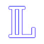

Breaking Bad | Best Moments

Larone - Movies & TV
67 mil inscritos
1.725.492 visualizações
•
18 de out. de 2023
Relive the most intense scenes, iconic dialogues, and unforgettable character transformations that turned the series into a global phenomenon. From Walter White’s humble beginnings to the most explosive confrontations, this video brings together the standout moments that made the show one of the greatest in television history.
#like #subscribe